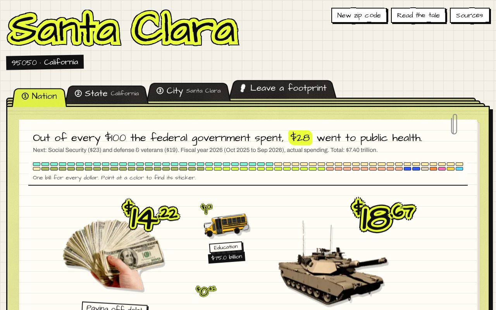

Dollars out of $100, not billions
Design


Because: $22 out of every $100 is a number you can feel. $1.6 trillion isn't.
Taxes come out of every paycheck, but where the money goes is buried in budget PDFs. I designed and built a site where you type your zip code and see what your city, your state and the federal government spent it on, told like a fairy tale.
Spending data is public but unreadable: billions of dollars in PDFs, split across three levels of government nobody can keep straight.
Type a zip code and get a collage of where your money went, as dollars out of every $100, across nation, state and city.
Tell it as a story with you as the main character, and show every number out of $100 instead of in billions.
Budgets live in PDFs and spreadsheets. Most people pay taxes every paycheck and never see where it goes, or which level of government is spending it.
Even when you find the numbers, they're in billions. Nobody can picture $1.6 trillion, so the data might as well be hidden.
The brief: SVSD's design challenge asked for a product built for a specific group of people, centered on storytelling, judged on product thinking, depth of reasoning and craft. So the question became: what if your taxes came with a story?
Goal: make your tax dollars feel personal in under a minute: one zip code, one picture, one tale.
Before designing anything, I had to find spending data that covered every town, not just big cities.
People don't think in billions. They think in their own town, and in a single dollar.
Drag through the real versions. Each one fixed what the last got wrong.
One call each for design, product strategy and tech.
Design

Because: $22 out of every $100 is a number you can feel. $1.6 trillion isn't.
Product strategy
Because: Social Security, paying off debt and the safety net don't fit a tidy list of 12 categories, but together they're a huge share of federal spending. Hiding them would have made the site cleaner and misleading, so they got their own buckets, and barely-funded categories got a gray "barely any money here" strip.
Tech
Because: City budgets change every year. A GitHub Action rebuilds the data for every city each month from the Census and California's Controller, so the site stays plain HTML, CSS and JavaScript with no server to babysit.
Live at feefifo.fund. No framework, no build step.
The psychedelic version was the most fun to build and the first thing I deleted.
Changing billions to dollars out of $100 did more than any visual I added.
State budgets are typed in by hand, so only California and New York are done. More states are next.
The Leave a footprint folder starts here: turning "where did it go" into "what can I do about it."